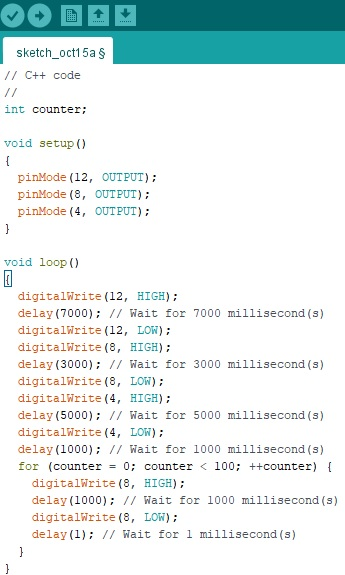

Exemplo na prática de Programação do semáforo simples com contador de led intermitente
Vídeo da execução:
Código C++ da IDE Arduino:

Código C++:
// C++ code
//
int counter;
void setup()
{
pinMode(12, OUTPUT);
pinMode(8, OUTPUT);
pinMode(4, OUTPUT);
}
void loop()
{
digitalWrite(12, HIGH);
delay(7000); // Wait for 7000 millisecond(s)
digitalWrite(12, LOW);
digitalWrite(8, HIGH);
delay(3000); // Wait for 3000 millisecond(s)
digitalWrite(8, LOW);
digitalWrite(4, HIGH);
delay(5000); // Wait for 5000 millisecond(s)
digitalWrite(4, LOW);
delay(1000); // Wait for 1000 millisecond(s)
for (counter = 0; counter < 100; ++counter) {
digitalWrite(8, HIGH);
delay(1000); // Wait for 1000 millisecond(s)
digitalWrite(8, LOW);
delay(1); // Wait for 1 millisecond(s)
}
}